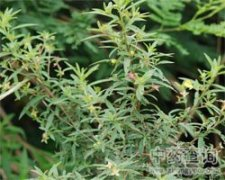

毛草龙

拼音
Máo Cǎo Lónɡ
别名
草里金钗、锁匙筒、水仙桃、针筒草、水秧草、水灯香、水香蕉、扫锅草、草龙、假黄车、假蕉
来源
药材基源：为柳叶菜科植物水丁香的全草。 拉丁植物动物矿物名：Ludwigia octoualuis (Jacq.)Raven[Jussiaea suffruticosa L,;Oenothera octoualuis Jacq.] 采收和储藏：夏、秋季采收地上部分，洗净，鲜用或晒干。
生境分布
生态环境：生于海拔1600m以下的山坡沟边、路旁、田边、荒地、潮湿草地。 资源分布：分布华东、中南、西南及能湾等地。
药材特点
亚灌木状草本，高0.3-1m。茎直立，稍具纵棱，幼时绿色，老时变红色，茎上部中空，全株被柔毛。叶互生；几无柄；叶片披针形或条状披针形，长3-15cm，宽1-2.5cm，先端渐尖，基部渐狭，全缘，两面密被柔毛。花两性，单生于叶腋，近无梗；萼筒线形，萼片4，长卵形，长6-15mm，具3脉，宿存；花瓣4，黄色，倒卵形，先端微凹，具4对明显脉纹，长8-10mm；雄蕊8；子房下位，柱头头状。蒴果圆柱形，绿色或淡紫色，长2-5cm，直径约5mm，被毛，具棱间开裂；种子多数，近半球形，种脊明显。花期7-10月。
性状
无性状数据
性味
味苦；微辛；性寒
功能主治
清热利湿；解毒消肿。主感冒发热；小儿疳热；咽喉肿痛；口舌生疮；高血压；水肿；湿热泻痢；淋痛；白浊；带下；乳痈；疔疮肿毒；痔疮；烫火伤；毒蛇咬伤
用法用量
内服：煎汤，15-30g；或研末。外用：适量，捣敷、研末或烧灰调涂；或煎汤洗。
化学成分
无化学成分数据
药理作用
1：无药理作用数据
摘录
《中华本草》